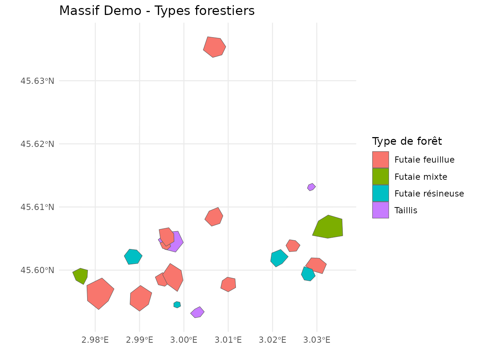

Démarrage rapide avec nemeton
Pascal Obstétar
2026-10-10
Source:vignettes/getting-started_fr.Rmd
getting-started_fr.RmdIntroduction
Le package nemeton implémente la méthode Nemeton pour
l’analyse systémique de territoires forestiers. Il fournit des outils
pour :
- Calculer des indicateurs biophysiques multi-famille (carbone, eau, sols, paysage, etc.)
- Normaliser les valeurs d’indicateurs selon plusieurs méthodes
- Créer des indices composites pour une évaluation holistique
- Visualiser les résultats avec des cartes et graphiques
Cette vignette démontre le workflow complet avec le jeu de données
massif_demo.
Installation
# Depuis GitHub
remotes::install_github("pobsteta/nemeton")Charger les données de démonstration
Le package inclut un jeu de données synthétique
(massif_demo) représentant une zone de 5km × 5km avec 20
parcelles forestières.
# Charger les parcelles forestières
data(massif_demo_units)
# Inspecter les parcelles
print(massif_demo_units)
#> Simple feature collection with 20 features and 122 fields
#> Geometry type: POLYGON
#> Dimension: XY
#> Bounding box: xmin: 698041.8 ymin: 6499215 xmax: 702793.8 ymax: 6504159
#> Projected CRS: RGF93 v1 / Lambert-93
#> First 10 features:
#> parcel_id forest_type age_class management species age
#> 1 P01 Futaie mixte Mature Mixte 09 68
#> 2 P02 Futaie résineuse Moyen Production 64 33
#> 3 P03 Futaie feuillue Surannée Conservation 03 104
#> 4 P04 Futaie feuillue Surannée Production 03 166
#> 5 P05 Futaie résineuse Moyen Production 61 47
#> 6 P06 Futaie résineuse Mature Production 61 79
#> 7 P07 Futaie feuillue Mature Mixte 03 75
#> 8 P08 Futaie feuillue Mature Production 52 71
#> 9 P09 Futaie mixte Moyen Production 03 48
#> 10 P10 Taillis Surannée Production 52 165
#> establishment_year density height dbh volume strata fertility climate
#> 1 1958 266 30.3 45.8 557.7 4 1 continental
#> 2 1993 465 30.4 57.5 1541.7 1 3 atlantique
#> 3 1922 128 31.7 41.7 232.7 2 2 atlantique
#> 4 1860 104 29.9 42.6 186.1 2 1 atlantique
#> 5 1979 324 27.5 51.5 779.5 2 2 atlantique
#> 6 1947 281 38.6 76.1 2072.1 2 1 atlantique
#> 7 1951 184 33.9 47.1 456.5 2 3 continental
#> 8 1955 169 27.2 38.8 228.3 3 2 montagnard
#> 9 1978 369 24.8 34.0 349.0 4 3 atlantique
#> 10 1861 632 25.7 34.0 619.4 2 2 montagnard
#> surface_ha couvert C1 C2 B1 B2 B3 B4 W1 W2 W3 W4
#> 1 4.989211 0.90 49.01124 NA NA NA 100 NA 0.000000 0 2.172398 NA
#> 2 5.867935 0.75 17.78697 NA NA NA 100 NA 0.000000 0 2.079708 NA
#> 3 6.557777 0.77 70.53634 NA NA NA 100 NA 0.000000 0 2.320038 NA
#> 4 9.989553 0.86 134.98574 NA NA NA 100 NA 8.677353 0 2.179088 NA
#> 5 5.906395 0.82 29.20340 NA NA NA 100 NA 0.000000 0 2.243098 NA
#> 6 1.048296 0.87 56.77781 NA NA NA 100 NA 0.000000 0 2.081669 NA
#> 7 17.079363 0.90 55.01833 NA NA NA 100 NA 0.000000 0 2.192747 NA
#> 8 11.414577 0.76 44.44292 NA NA NA 100 NA 0.000000 0 2.238672 NA
#> 9 16.105209 0.83 30.25904 NA NA NA 100 NA 0.000000 0 2.244686 NA
#> 10 10.733433 0.75 118.81922 NA NA NA 100 NA 3.771602 0 2.261767 NA
#> A1 A2 A3 A4 A5 F1 F2 L1 L2 L3 T1 T2 T3 R1
#> 1 99.86906 100.0 NA NA NA NA 15.0 52.4 91.8 NA 68 60.00000 NA 99.92593
#> 2 99.97049 99.4 NA NA NA NA 10.3 52.6 93.0 NA 33 60.00000 NA 100.00000
#> 3 100.00000 99.5 NA NA NA NA 14.9 51.3 91.2 NA 104 60.00000 NA 100.00000
#> 4 99.84681 98.6 NA NA NA NA 13.7 51.5 94.5 NA 166 60.00000 NA 99.89067
#> 5 99.77814 99.9 NA NA NA NA 13.1 51.2 94.6 NA 47 60.00000 NA 99.52389
#> 6 99.76134 99.9 NA NA NA NA 11.1 51.0 94.6 NA 79 60.00000 NA 99.93789
#> 7 99.73619 100.0 NA NA NA NA 12.9 53.0 93.5 NA 75 60.00000 NA 99.98671
#> 8 99.73794 100.0 NA NA NA NA 15.0 52.8 94.2 NA 71 59.49461 NA 99.68795
#> 9 100.00000 95.3 NA NA NA NA 15.2 50.3 90.7 NA 48 60.00000 NA 99.89949
#> 10 99.76902 99.8 NA NA NA NA 15.0 51.5 93.8 NA 165 60.00000 NA 99.93098
#> R2 R3 R4 R5 R6 R7 S1 S2 S3 P1 P2 P3 E1
#> 1 35.25631 76.92404 NA NA NA NA 2000.0000 NA NA 625.5427 NA 100 2.074644
#> 2 41.96851 75.30786 NA NA NA NA 519.1841 NA NA 1916.2231 NA 100 5.735124
#> 3 34.54891 73.28855 NA NA NA NA 613.0613 NA NA 261.0616 6.5 100 0.865644
#> 4 35.61949 76.75013 NA NA NA NA 315.2487 NA NA 208.7976 NA 100 0.692292
#> 5 35.99775 74.29972 NA NA NA NA 1567.7493 NA NA 968.8934 6.5 100 2.899740
#> 6 35.12141 76.35914 NA NA NA NA 1231.9158 NA NA 2575.4125 NA 100 7.708212
#> 7 35.78224 74.47584 NA NA NA NA 2000.0000 NA NA 511.9895 NA 100 1.698180
#> 8 32.92514 75.01452 NA NA NA NA 1760.8281 NA NA 283.7285 6.5 100 0.849276
#> 9 33.02696 74.15969 NA NA NA NA 167.4920 NA NA 391.4151 NA 85 1.298280
#> 10 35.28078 74.08264 NA NA NA NA 1028.0662 NA NA 769.8248 6.5 100 2.304168
#> E2 N1 N2 N3 b4_status w4_status
#> 1 2.0725694 NA 60.00000 NA skipped_no_spectral skipped_no_micro
#> 2 5.7293889 NA 60.00000 NA skipped_no_spectral skipped_no_micro
#> 3 0.8647784 NA 60.00000 NA skipped_no_spectral skipped_no_micro
#> 4 0.6915997 NA 60.00000 NA skipped_no_spectral skipped_no_micro
#> 5 2.8968403 NA 60.00000 NA skipped_no_spectral skipped_no_micro
#> 6 7.7005038 NA 60.00000 NA skipped_no_spectral skipped_no_micro
#> 7 1.6964818 NA 60.00000 NA skipped_no_spectral skipped_no_micro
#> 8 0.8484267 NA 59.49461 NA skipped_no_spectral skipped_no_micro
#> 9 1.2969817 NA 60.00000 NA skipped_no_spectral skipped_no_micro
#> 10 2.3018638 NA 60.00000 NA skipped_no_spectral skipped_no_micro
#> a3_status a4_status a5_status l3_status
#> 1 skipped_no_micro skipped_no_micro skipped_no_lst skipped_no_spectral
#> 2 skipped_no_micro skipped_no_micro skipped_no_lst skipped_no_spectral
#> 3 skipped_no_micro skipped_no_micro skipped_no_lst skipped_no_spectral
#> 4 skipped_no_micro skipped_no_micro skipped_no_lst skipped_no_spectral
#> 5 skipped_no_micro skipped_no_micro skipped_no_lst skipped_no_spectral
#> 6 skipped_no_micro skipped_no_micro skipped_no_lst skipped_no_spectral
#> 7 skipped_no_micro skipped_no_micro skipped_no_lst skipped_no_spectral
#> 8 skipped_no_micro skipped_no_micro skipped_no_lst skipped_no_spectral
#> 9 skipped_no_micro skipped_no_micro skipped_no_lst skipped_no_spectral
#> 10 skipped_no_micro skipped_no_micro skipped_no_lst skipped_no_spectral
#> t3_status r1_status r5_status r6_status
#> 1 skipped_no_sufosat fire_exp skipped_no_method skipped_no_micro
#> 2 skipped_no_sufosat fire_exp skipped_no_method skipped_no_micro
#> 3 skipped_no_sufosat fire_exp skipped_no_method skipped_no_micro
#> 4 skipped_no_sufosat fire_exp skipped_no_method skipped_no_micro
#> 5 skipped_no_sufosat fire_exp skipped_no_method skipped_no_micro
#> 6 skipped_no_sufosat fire_exp skipped_no_method skipped_no_micro
#> 7 skipped_no_sufosat fire_exp skipped_no_method skipped_no_micro
#> 8 skipped_no_sufosat fire_exp skipped_no_method skipped_no_micro
#> 9 skipped_no_sufosat fire_exp skipped_no_method skipped_no_micro
#> 10 skipped_no_sufosat fire_exp skipped_no_method skipped_no_micro
#> r7_status p3_status C1_norm C2_norm B1_norm B2_norm B3_norm
#> 1 skipped_no_tmin diametre_seul 32.67416 NA NA NA 100
#> 2 skipped_no_tmin diametre_seul 11.85798 NA NA NA 100
#> 3 skipped_no_tmin diametre_seul 47.02422 NA NA NA 100
#> 4 skipped_no_tmin diametre_seul 89.99050 NA NA NA 100
#> 5 skipped_no_tmin diametre_seul 19.46893 NA NA NA 100
#> 6 skipped_no_tmin diametre_seul 37.85187 NA NA NA 100
#> 7 skipped_no_tmin diametre_seul 36.67889 NA NA NA 100
#> 8 skipped_no_tmin diametre_seul 29.62861 NA NA NA 100
#> 9 skipped_no_tmin diametre_seul 20.17269 NA NA NA 100
#> 10 skipped_no_tmin diametre_seul 79.21281 NA NA NA 100
#> B4_norm W1_norm W2_norm W3_norm W4_norm A1_norm A2_norm A3_norm A4_norm
#> 1 NA 0.000000 0 0 NA 99.86906 100.0 NA NA
#> 2 NA 0.000000 0 0 NA 99.97049 99.4 NA NA
#> 3 NA 0.000000 0 0 NA 100.00000 99.5 NA NA
#> 4 NA 17.354705 0 0 NA 99.84681 98.6 NA NA
#> 5 NA 0.000000 0 0 NA 99.77814 99.9 NA NA
#> 6 NA 0.000000 0 0 NA 99.76134 99.9 NA NA
#> 7 NA 0.000000 0 0 NA 99.73619 100.0 NA NA
#> 8 NA 0.000000 0 0 NA 99.73794 100.0 NA NA
#> 9 NA 0.000000 0 0 NA 100.00000 95.3 NA NA
#> 10 NA 7.543203 0 0 NA 99.76902 99.8 NA NA
#> A5_norm F1_norm F2_norm L1_norm L2_norm L3_norm T1_norm T2_norm T3_norm
#> 1 NA NA 15.0 47.6 91.8 NA 34.0 60.00000 NA
#> 2 NA NA 10.3 47.4 93.0 NA 16.5 60.00000 NA
#> 3 NA NA 14.9 48.7 91.2 NA 52.0 60.00000 NA
#> 4 NA NA 13.7 48.5 94.5 NA 83.0 60.00000 NA
#> 5 NA NA 13.1 48.8 94.6 NA 23.5 60.00000 NA
#> 6 NA NA 11.1 49.0 94.6 NA 39.5 60.00000 NA
#> 7 NA NA 12.9 47.0 93.5 NA 37.5 60.00000 NA
#> 8 NA NA 15.0 47.2 94.2 NA 35.5 59.49461 NA
#> 9 NA NA 15.2 49.7 90.7 NA 24.0 60.00000 NA
#> 10 NA NA 15.0 48.5 93.8 NA 82.5 60.00000 NA
#> R1_norm R2_norm R3_norm R4_norm R5_norm R6_norm R7_norm S1_norm
#> 1 7.406871e-02 64.74369 23.07596 NA NA NA NA 0.00000
#> 2 1.421085e-14 58.03149 24.69214 NA NA NA NA 74.04080
#> 3 1.421085e-14 65.45109 26.71145 NA NA NA NA 69.34694
#> 4 1.093308e-01 64.38051 23.24987 NA NA NA NA 84.23757
#> 5 4.761100e-01 64.00225 25.70028 NA NA NA NA 21.61254
#> 6 6.211201e-02 64.87859 23.64086 NA NA NA NA 38.40421
#> 7 1.328786e-02 64.21776 25.52416 NA NA NA NA 0.00000
#> 8 3.120502e-01 67.07486 24.98548 NA NA NA NA 11.95859
#> 9 1.005133e-01 66.97304 25.84031 NA NA NA NA 91.62540
#> 10 6.901821e-02 64.71922 25.91736 NA NA NA NA 48.59669
#> S2_norm S3_norm P1_norm P2_norm P3_norm E1_norm E2_norm N1_norm
#> 1 NA NA 78.19283 NA 100 78.58500 78.50642 NA
#> 2 NA NA 100.00000 NA 100 100.00000 100.00000 NA
#> 3 NA NA 32.63271 43.33333 100 32.78955 32.75676 NA
#> 4 NA NA 26.09970 NA 100 26.22318 26.19696 NA
#> 5 NA NA 100.00000 43.33333 100 100.00000 100.00000 NA
#> 6 NA NA 100.00000 NA 100 100.00000 100.00000 NA
#> 7 NA NA 63.99869 NA 100 64.32500 64.26068 NA
#> 8 NA NA 35.46606 43.33333 100 32.16955 32.13738 NA
#> 9 NA NA 48.92689 NA 85 49.17727 49.12810 NA
#> 10 NA NA 96.22810 43.33333 100 87.27909 87.19181 NA
#> N2_norm N3_norm famille_carbone famille_biodiversite famille_eau
#> 1 60.00000 NA 32.67416 100 0.000000
#> 2 60.00000 NA 11.85798 100 0.000000
#> 3 60.00000 NA 47.02422 100 0.000000
#> 4 60.00000 NA 89.99050 100 5.784902
#> 5 60.00000 NA 19.46893 100 0.000000
#> 6 60.00000 NA 37.85187 100 0.000000
#> 7 60.00000 NA 36.67889 100 0.000000
#> 8 59.49461 NA 29.62861 100 0.000000
#> 9 60.00000 NA 20.17269 100 0.000000
#> 10 60.00000 NA 79.21281 100 2.514401
#> famille_air famille_sol famille_paysage famille_temporel famille_risque
#> 1 99.93453 15.0 69.70 47.00000 29.29790
#> 2 99.68525 10.3 70.20 38.25000 27.57454
#> 3 99.75000 14.9 69.95 56.00000 30.72085
#> 4 99.22340 13.7 71.50 71.50000 29.24657
#> 5 99.83907 13.1 71.70 41.75000 30.05955
#> 6 99.83067 11.1 71.80 49.75000 29.52719
#> 7 99.86809 12.9 70.25 48.75000 29.91840
#> 8 99.86897 15.0 70.70 47.49731 30.79080
#> 9 97.65000 15.2 70.20 42.00000 30.97129
#> 10 99.78451 15.0 71.15 71.25000 30.23520
#> famille_social famille_production famille_energie famille_naturalite
#> 1 0.00000 89.09642 78.54571 60.00000
#> 2 74.04080 100.00000 100.00000 60.00000
#> 3 69.34694 58.65535 32.77315 60.00000
#> 4 84.23757 63.04985 26.21007 60.00000
#> 5 21.61254 81.11111 100.00000 60.00000
#> 6 38.40421 100.00000 100.00000 60.00000
#> 7 0.00000 81.99934 64.29284 60.00000
#> 8 11.95859 59.59980 32.15346 59.49461
#> 9 91.62540 66.96345 49.15268 60.00000
#> 10 48.59669 79.85381 87.23545 60.00000
#> geometry
#> 1 POLYGON ((698299.9 6499928,...
#> 2 POLYGON ((701702.2 6500418,...
#> 3 POLYGON ((702240.4 6500270,...
#> 4 POLYGON ((700641.3 6504129,...
#> 5 POLYGON ((699268.2 6500307,...
#> 6 POLYGON ((699943.5 6499421,...
#> 7 POLYGON ((698500.5 6499360,...
#> 8 POLYGON ((699061.9 6499649,...
#> 9 POLYGON ((702258.5 6500666,...
#> 10 POLYGON ((699897.1 6500739,...
# Statistiques sommaires
cat("\nSurface totale:", sum(massif_demo_units$surface_ha), "ha\n")
#>
#> Surface totale: 136.0225 ha
table(massif_demo_units$forest_type)
#>
#> Futaie feuillue Futaie mixte Futaie résineuse Taillis
#> 11 2 4 3
ggplot(massif_demo_units) +
geom_sf(aes(fill = forest_type)) +
theme_minimal() +
labs(
title = "Massif Demo - Types forestiers",
fill = "Type de forêt"
)
Parcelles forestières par type
Charger les couches spatiales
Utilisez massif_demo_layers() pour charger tous les
rasters et vecteurs associés :
layers <- massif_demo_layers()
print(layers)
#>
#> ── nemeton_layers object ───────
#>
#> ── Rasters (4) ──
#>
#> • biomass : massif_demo_biomass.tif [not loaded]
#> • dem : massif_demo_dem.tif [not loaded]
#> • landcover : massif_demo_landcover.tif [not loaded]
#> • species_richness : massif_demo_species_richness.tif [not loaded]
#>
#> ── Vectors (2) ──
#>
#> • roads : massif_demo_roads.gpkg [not loaded]
#> • water : massif_demo_water.gpkg [not loaded]Le jeu de données inclut : - Rasters : biomasse, MNT, occupation du sol, richesse spécifique - Vecteurs : réseau routier, cours d’eau
Calculer les indicateurs
Indicateurs individuels
# Carbone (via NDVI)
carbon <- nemeton_compute(
massif_demo_units,
layers,
indicators = "indicateur_c2_ndvi"
)
# Eau (TWI - Topographic Wetness Index)
water <- nemeton_compute(
massif_demo_units,
layers,
indicators = "indicateur_w3_humidite"
)
# Afficher les résultats
head(carbon[, c("parcel_id", "forest_type", "indicateur_c2_ndvi")])
#> Simple feature collection with 6 features and 3 fields
#> Geometry type: POLYGON
#> Dimension: XY
#> Bounding box: xmin: 698041.8 ymin: 6499388 xmax: 702507.7 ymax: 6504159
#> Projected CRS: RGF93 v1 / Lambert-93
#> parcel_id forest_type indicateur_c2_ndvi geometry
#> 1 P01 Futaie mixte NA POLYGON ((698299.9 6499928,...
#> 2 P02 Futaie résineuse NA POLYGON ((701702.2 6500418,...
#> 3 P03 Futaie feuillue NA POLYGON ((702240.4 6500270,...
#> 4 P04 Futaie feuillue NA POLYGON ((700641.3 6504129,...
#> 5 P05 Futaie résineuse NA POLYGON ((699268.2 6500307,...
#> 6 P06 Futaie résineuse NA POLYGON ((699943.5 6499421,...Indicateurs multiples simultanés
# Calculer 3 indicateurs en une fois
results <- nemeton_compute(
massif_demo_units,
layers,
indicators = c("indicateur_c2_ndvi", "indicateur_w3_humidite", "indicateur_l1_effet_lisiere")
)
#> Error:
#> ! no valid constructor available for the argument list
# Vue d'ensemble
summary(results[, c("indicateur_c2_ndvi", "indicateur_w3_humidite", "indicateur_l1_effet_lisiere")])
#> Error:
#> ! object 'results' not foundNormalisation
Normalisez les indicateurs pour les rendre comparables (échelle 0-100) :
# Normalisation min-max
normalized <- normalize_indicators(
results,
indicators = c("indicateur_c2_ndvi", "indicateur_w3_humidite", "indicateur_l1_effet_lisiere"),
method = "minmax"
)
#> Error:
#> ! object 'results' not found
# Comparer avant/après
cat("\nAvant normalisation (carbone NDVI):\n")
#>
#> Avant normalisation (carbone NDVI):
summary(results$indicateur_c2_ndvi)
#> Error:
#> ! object 'results' not found
cat("\nAprès normalisation (carbone NDVI):\n")
#>
#> Après normalisation (carbone NDVI):
summary(normalized$indicateur_c2_ndvi_norm)
#> Error:
#> ! object 'normalized' not foundMéthodes de normalisation
# z-score (distribution normale centrée-réduite)
norm_zscore <- normalize_indicators(
results,
indicators = "indicateur_c2_ndvi",
method = "zscore"
)
#> Error:
#> ! object 'results' not found
# Quantiles (distribution uniforme)
norm_quantile <- normalize_indicators(
results,
indicators = "indicateur_c2_ndvi",
method = "quantile"
)
#> Error:
#> ! object 'results' not foundAgrégation en indices composites
Combinez plusieurs indicateurs en un indice unique :
# Indice composite avec poids égaux
composite <- create_composite_index(
normalized,
indicators = c("indicateur_c2_ndvi_norm", "indicateur_w3_humidite_norm", "indicateur_l1_effet_lisiere_norm"),
name = "ecosystem_health"
)
#> Error:
#> ! object 'normalized' not found
# Afficher les résultats
head(composite[, c("parcel_id", "forest_type", "ecosystem_health")])
#> Error:
#> ! object 'composite' not foundAgrégation pondérée
# Poids personnalisés (carbone 50%, paysage 30%, eau 20%)
composite_weighted <- create_composite_index(
normalized,
indicators = c("indicateur_c2_ndvi_norm", "indicateur_l1_effet_lisiere_norm", "indicateur_w3_humidite_norm"),
weights = c(0.5, 0.3, 0.2),
name = "conservation_index"
)
#> Error:
#> ! object 'normalized' not foundMéthodes d’agrégation
# Moyenne géométrique (effets multiplicatifs)
composite_geom <- create_composite_index(
normalized,
indicators = c("indicateur_c2_ndvi_norm", "indicateur_w3_humidite_norm"),
aggregation = "geometric_mean",
name = "water_carbon_index"
)
#> Error:
#> ! object 'normalized' not found
# Minimum (approche conservatrice, facteur limitant)
composite_min <- create_composite_index(
normalized,
indicators = c("indicateur_c2_ndvi_norm", "indicateur_w3_humidite_norm"),
aggregation = "min",
name = "minimum_performance"
)
#> Error:
#> ! object 'normalized' not foundVisualisation
Cartes thématiques
plot_indicators_map(
composite,
indicators = "ecosystem_health",
title = "Indice de santé écosystémique",
legend_title = "Score (0-100)"
)
#> Error:
#> ! object 'composite' not foundCartes multiples (facettes)
plot_indicators_map(
normalized,
indicators = c("indicateur_c2_ndvi_norm", "indicateur_w3_humidite_norm"),
palette = "viridis",
facet = TRUE,
ncol = 2,
title = "Comparaison carbone vs eau"
)
#> Error:
#> ! object 'normalized' not foundGraphique radar
nemeton_radar(
normalized,
unit_id = "P01",
indicators = c("indicateur_c2_ndvi_norm", "indicateur_w3_humidite_norm", "indicateur_l1_effet_lisiere_norm"),
title = "Profil multi-indicateurs - Parcelle P01"
)
#> Error:
#> ! object 'normalized' not foundWorkflow complet
Voici un exemple de workflow complet de bout en bout :
# 1. Charger les données
data(massif_demo_units)
layers <- massif_demo_layers()
# 2. Calculer les indicateurs
results <- nemeton_compute(
massif_demo_units,
layers,
indicators = c(
"indicateur_c2_ndvi", "indicateur_w3_humidite", "indicateur_l1_effet_lisiere"
)
)
#> Error:
#> ! no valid constructor available for the argument list
# 3. Normaliser (0-100)
normalized <- normalize_indicators(
results,
indicators = c(
"indicateur_c2_ndvi", "indicateur_w3_humidite", "indicateur_l1_effet_lisiere"
),
method = "minmax"
)
#> Error:
#> ! object 'results' not found
# 4. Créer un indice composite
composite <- create_composite_index(
normalized,
indicators = c("indicateur_c2_ndvi_norm", "indicateur_w3_humidite_norm", "indicateur_l1_effet_lisiere_norm"),
weights = c(0.4, 0.4, 0.2),
name = "forest_quality"
)
#> Error:
#> ! object 'normalized' not found
# 5. Visualiser
plot_indicators_map(
composite,
indicators = "forest_quality",
title = "Indice de qualité forestière",
legend_title = "Score (0-100)"
)
#> Error:
#> ! object 'composite' not foundAnalyses avancées
Inverser un indicateur
Pour les indicateurs où une valeur faible est souhaitable :
# Exemple: inverser un indicateur
# (Utilisé pour les indicateurs où une valeur faible est souhaitable)
normalized_inv <- invert_indicator(
normalized,
indicators = "indicateur_w3_humidite_norm",
suffix = "_inv"
)
# L'indicateur inversé
head(normalized_inv[, c("parcel_id", "indicateur_w3_humidite_norm", "indicateur_w3_humidite_norm_inv")])Filtrage et sous-ensembles
# Sélectionner uniquement les futaies feuillues
broadleaf <- normalized[normalized$forest_type == "Futaie feuillue", ]
#> Error:
#> ! object 'normalized' not found
# Créer un indice spécifique
broadleaf_index <- create_composite_index(
broadleaf,
indicators = c("indicateur_c2_ndvi_norm", "indicateur_w3_humidite_norm"),
name = "broadleaf_quality"
)
#> Error:
#> ! object 'broadleaf' not foundInternationalisation
Le package supporte le français et l’anglais :
# Définir la langue
nemeton_set_language("fr") # Français
# nemeton_set_language("en") # English
# Les messages d'erreur/information seront dans la langue choisieExport des résultats
# Export en GeoPackage
sf::st_write(composite, "results/forest_quality.gpkg")
# Export en CSV (sans géométrie)
results_table <- composite |>
sf::st_drop_geometry()
write.csv(results_table, "results/forest_quality.csv", row.names = FALSE)Prochaines étapes
-
Analyse temporelle :
vignette("temporal-analysis_fr")- Analyse multi-périodes -
Familles d’indicateurs :
vignette("indicator-families_fr")- Système 12 familles -
Internationalisation :
vignette("internationalization")- Système i18n
Références
- Méthode Nemeton : Développée par Vivre en Forêt
- Documentation complète :
help(package = "nemeton") - Site web : https://pobsteta.github.io/nemeton/
Session Info
sessionInfo()
#> R version 4.6.1 (2026-06-24)
#> Platform: x86_64-pc-linux-gnu
#> Running under: Ubuntu 24.04.5 LTS
#>
#> Matrix products: default
#> BLAS: /usr/lib/x86_64-linux-gnu/openblas-pthread/libblas.so.3
#> LAPACK: /usr/lib/x86_64-linux-gnu/openblas-pthread/libopenblasp-r0.3.26.so; LAPACK version 3.12.0
#>
#> locale:
#> [1] LC_CTYPE=C.UTF-8 LC_NUMERIC=C LC_TIME=C.UTF-8
#> [4] LC_COLLATE=C.UTF-8 LC_MONETARY=C.UTF-8 LC_MESSAGES=C.UTF-8
#> [7] LC_PAPER=C.UTF-8 LC_NAME=C LC_ADDRESS=C
#> [10] LC_TELEPHONE=C LC_MEASUREMENT=C.UTF-8 LC_IDENTIFICATION=C
#>
#> time zone: UTC
#> tzcode source: system (glibc)
#>
#> attached base packages:
#> [1] stats graphics grDevices utils datasets methods base
#>
#> other attached packages:
#> [1] ggplot2_4.0.3 nemeton_2026.10.1.9000
#>
#> loaded via a namespace (and not attached):
#> [1] omnibus_1.2.15 rappdirs_0.3.4 sass_0.4.10
#> [4] generics_0.1.4 xml2_1.6.0 class_7.3-23
#> [7] KernSmooth_2.23-26 lattice_0.22-9 digest_0.6.39
#> [10] magrittr_2.0.5 evaluate_1.0.5 grid_4.6.1
#> [13] RColorBrewer_1.1-3 fastmap_1.2.0 jsonlite_2.0.0
#> [16] e1071_1.7-17 DBI_1.3.0 fasterRaster_8.4.1.2
#> [19] scales_1.4.0 codetools_0.2-20 textshaping_1.0.5
#> [22] jquerylib_0.1.4 cli_3.6.6 rgrass_0.5-3
#> [25] rlang_1.3.0 units_1.0-1 withr_3.0.3
#> [28] cachem_1.1.0 yaml_2.3.12 otel_0.2.0
#> [31] raster_3.6-32 tools_4.6.1 dplyr_1.2.1
#> [34] exactextractr_0.10.1 vctrs_0.7.3 R6_2.6.1
#> [37] proxy_0.4-29 lifecycle_1.0.5 classInt_0.4-11
#> [40] fs_2.1.0 htmlwidgets_1.6.4 ragg_1.5.2
#> [43] pkgconfig_2.0.3 desc_1.4.3 pkgdown_2.2.1
#> [46] terra_1.9-50 bslib_0.12.0 pillar_1.11.1
#> [49] gtable_0.3.6 data.table_1.18.6.1 glue_1.8.1
#> [52] Rcpp_1.1.2 sf_1.1-3 systemfonts_1.3.2
#> [55] xfun_0.61 tibble_3.3.1 tidyselect_1.2.1
#> [58] knitr_1.52 farver_2.1.2 htmltools_0.5.9
#> [61] rmarkdown_2.32 compiler_4.6.1 S7_0.2.2
#> [64] sp_2.2-3